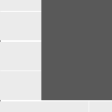
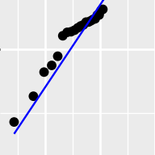
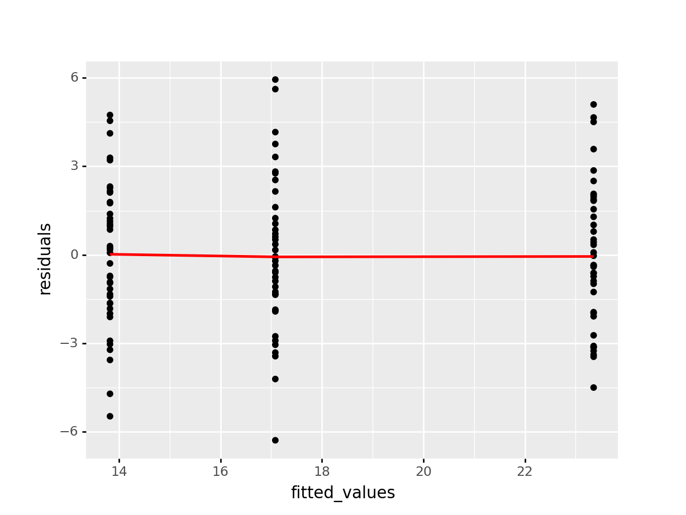
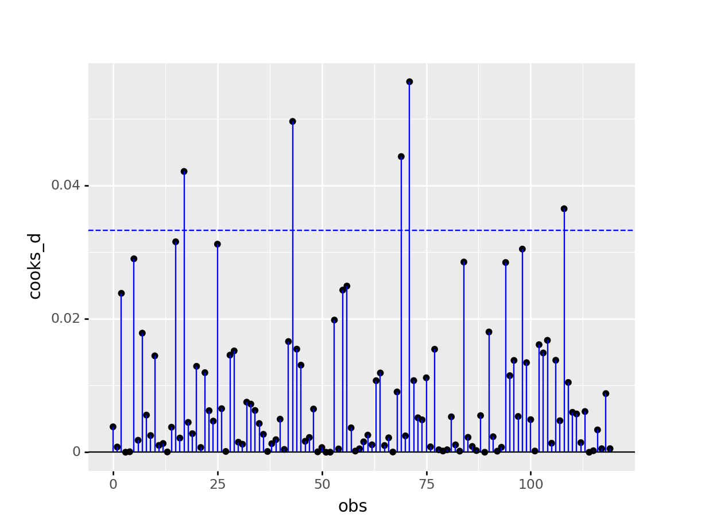

#area_51
import numpy as np
import pandas as pd
import seaborn as sns
import patchworklib as pw
from plotnine import *
from plotnine.data import *
import plotnine
from statsmodels.tools.tools import maybe_unwrap_results
from statsmodels.graphics.gofplots import ProbPlot
from statsmodels.stats.outliers_influence import variance_inflation_factor
import matplotlib.pyplot as plt
from typing import Type
import statsmodels.formula.api as smf
import patchworklib as pwoystercatcher_py = pd.read_csv("data/CS2-oystercatcher-feeding.csv")# define the model
model = smf.ols(formula= "feeding ~ C(site)", data = oystercatcher_py)
# fit the model
results = model.fit()
results.summary()| Dep. Variable: | feeding | R-squared: | 0.720 |
|---|---|---|---|
| Model: | OLS | Adj. R-squared: | 0.716 |
| Method: | Least Squares | F-statistic: | 150.8 |
| Date: | Fri, 05 Aug 2022 | Prob (F-statistic): | 4.13e-33 |
| Time: | 18:00:31 | Log-Likelihood: | -278.49 |
| No. Observations: | 120 | AIC: | 563.0 |
| Df Residuals: | 117 | BIC: | 571.3 |
| Df Model: | 2 | ||
| Covariance Type: | nonrobust |
| coef | std err | t | P>|t| | [0.025 | 0.975] | |
|---|---|---|---|---|---|---|
| Intercept | 13.8229 | 0.395 | 35.032 | 0.000 | 13.041 | 14.604 |
| C(site)[T.partial] | 3.2588 | 0.558 | 5.840 | 0.000 | 2.154 | 4.364 |
| C(site)[T.sheltered] | 9.5326 | 0.558 | 17.083 | 0.000 | 8.427 | 10.638 |
| Omnibus: | 0.490 | Durbin-Watson: | 2.126 |
|---|---|---|---|
| Prob(Omnibus): | 0.783 | Jarque-Bera (JB): | 0.642 |
| Skew: | 0.107 | Prob(JB): | 0.726 |
| Kurtosis: | 2.713 | Cond. No. | 3.73 |
Notes:
[1] Standard Errors assume that the covariance matrix of the errors is correctly specified.
# Get different Variables for diagnostic
residuals = results.resid.rename("residuals")
fitted_values = results.fittedvalues.rename("fitted_values")
std_resid = pd.Series(results.resid_pearson).rename("std_resid")
influence = results.get_influence()
cooks_d = pd.Series(influence.cooks_distance[0]).rename("cooks_d")
leverage = pd.Series(influence.hat_matrix_diag).rename("leverage")
obs = pd.Series(range(len(residuals))).rename("obs")
n_obs = len(obs.index)# combine Series into DataFrame
model_values = residuals.to_frame().join(fitted_values).join(std_resid).join(cooks_d).join(leverage).join(obs)
model_values["n_obs"] = n_obsg1 = pw.load_ggplot(ggplot(mtcars) + geom_point(aes("mpg", "disp")),figsize=(2, 3))
g2 = pw.load_ggplot(ggplot(mtcars) + geom_boxplot(aes("gear", "disp", group = "gear")),figsize=(2, 3))
g3 = pw.load_ggplot(ggplot(mpg, aes(x='displ', y='hwy')) + geom_point() + geom_smooth(span=.3) + theme(figure_size=(2, 3)))
g4 = pw.load_ggplot(ggplot(mtcars) + geom_bar(aes("carb")) + theme(figure_size=(7, 2)))
g1234 = (g1|g2|g3)/g4
g1234.savefig("")
Q-Q plot
p1 = (
ggplot(model_values, aes(sample = "residuals"))
+ stat_qq()
+ stat_qq_line(colour = "blue")
)
p1 = pw.load_ggplot(p1, figsize=(2,3))
p1.savefig()
Residual plot
(
ggplot(model_values, aes(x = "fitted_values", y = "residuals"))
+ geom_point()
+ geom_smooth(se = False, colour = "red")
)<ggplot: (374146961)>
Location-Scale plot
(
ggplot(model_values, aes(x = "fitted_values", y = "std_resid"))
+ geom_point()
+ geom_smooth(se = False, colour = "red")
)<ggplot: (374140238)>
Cook’s distance
(
ggplot(model_values, aes(x = "obs", y = "cooks_d"))
+ geom_point()
+ geom_segment(aes(xend = "obs", yend = 0), colour = "blue")
+ geom_hline(aes(yintercept = 0))
+ geom_hline(aes(yintercept = 4/n_obs), colour = "blue", linetype = "dashed")
)<ggplot: (374176561)>